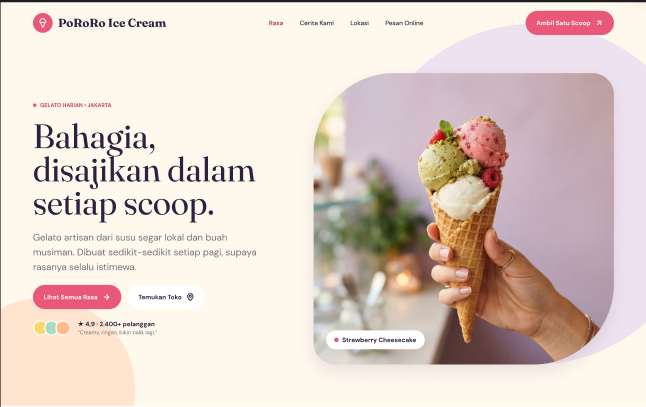
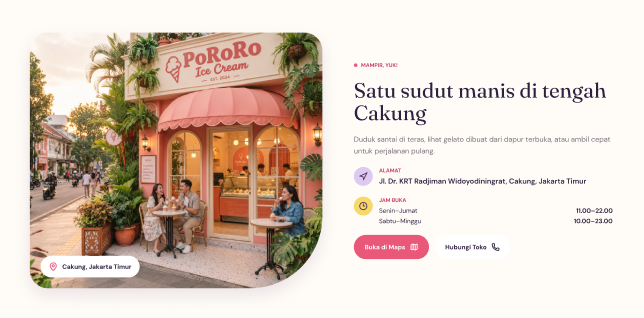
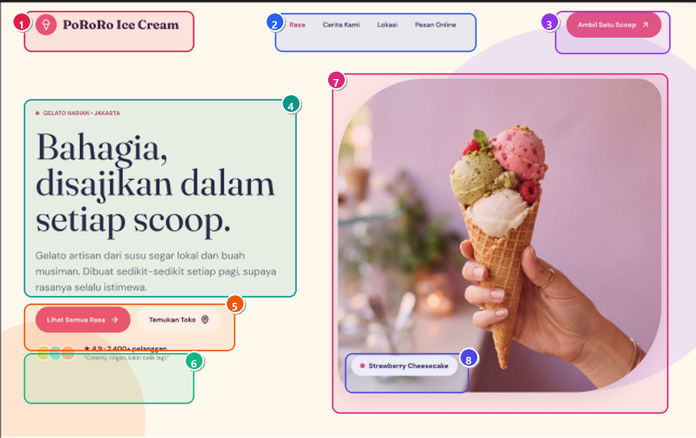

PoRoRo Ice Cream — Digital Product & Brand UI/UX Masterplan
Masterplan komprehensif produk digital dan brand gelato artisan Cakung, Jakarta Timur: perancangan design system tokens di Figma, 10 komponen modular Nuxt 3, katalog 18 varian rasa, dan alur delivery 30 menit.



Lokasi Proyek & Verifikasi Kode Lokal
Proyek ini dikembangkan dan dikelola secara lokal pada:
C:\Project MKK Kel 6\frontend (Proyek Mata Pelajaran Konsentrasi Keahlian / MKK Kelompok 6 SMKN 71 Jakarta).
Design System Tokens & Tipografi Pastel
Seluruh antarmuka dibangun dengan sistem token visual terstandarisasi:
- Palet Pastel Alami: Lavender, Peach, Sky Blue, Soft Yellow, dan Mint yang mencerminkan bahan segar susu lokal Puncak dan buah asli.
- Kombinasi Tipografi: Display serif Fraunces untuk kehangatan artisan, dipadukan dengan sans-serif DM Sans untuk teks isi agar nyaman dibaca di smartphone.
- 10 Komponen Modular Vue 3: Navbar kapsul melayang (blur 16px), HeroSection, FavoriteFlavors, IngredientPromise, WeekendPromotion, CraftProcess, CustomerStories, StoreLocation, OrderCta, dan SiteFooter.
Customer Journey & Delivery 30 Menit
Merancang alur pelanggan dari discovery hingga pemesanan:
Menemukan ulasan viral di media sosial atau Google Maps dengan rating 4.9 dari 2.400+ pelanggan.
Membaca cerita susu segar lokal Puncak dan memfilter rasa favorit (Pistachio, Strawberry Cheesecake, Matcha, Choco-Hazelnut).
Memilih menikmati gelato di teras dine-in Cakung atau memesan pengiriman tub beku dalam thermal cooler bag sampai dalam 30 menit.